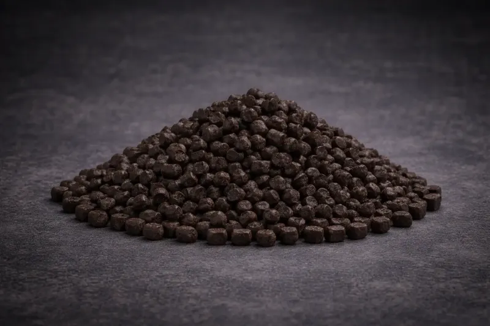

Корм для прудовой рыбы
Корм для рыб COPPENS (SUPREME ASTAX 8,00 mm)
Цена и наличие
- 0,5 кг15 BYN / шт.В наличии
- 1,5 кг37,5 BYN / шт.В наличии
- 1 кг (от 5кг)22 BYN / шт.В наличии
Данные на 23.11.2026.
Характеристики
- По плавучести
- тонущий
Описание
Корм для рыб COPPENS (SUPREME ASTAX 8,00 mm) - это тонущий корм, разработанный для разведения и выращивания форели в УЗВ (установках замкнутого водоснабжения).
Корм для форели COPPENS SUPREME ASTAX, гранула 8,00 мм предназначен для кормления крупной и взрослой форели, в том числе при выращивании рыбы в УЗВ — установках замкнутого водоснабжения. Крупная гранула диаметром 8 мм подходит для рыбы, которая уже перешла на большие кормовые фракции и способна без труда захватывать такой корм. COPPENS SUPREME ASTAX разработан для интенсивного выращивания форели и подходит для хозяйств, где важно контролировать питание, рост рыбы и качество воды. Корм содержит астаксантин — пигмент, который используется в рационах лососевых рыб и способствует формированию характерной окраски мяса форели. Это особенно актуально при товарном выращивании рыбы. В условиях УЗВ кормление необходимо проводить небольшими порциями, ориентируясь на массу рыбы, температуру воды и активность ее питания. Важно следить, чтобы гранулы быстро поедались и не оставались в системе, поскольку избыток несъеденного корма увеличивает нагрузку на фильтрацию и может ухудшать качество воды. Корм COPPENS SUPREME ASTAX 8 мм подойдет для рыбоводных хозяйств и ферм, выращивающих крупную форель в УЗВ, бассейнах и других системах интенсивного содержания. Для молоди и небольшой форели следует выбирать более мелкую фракцию, а гранулу 8 мм использовать после того, как рыба достигнет подходящего размера. Правильный подбор размера гранулы и нормы кормления помогает снизить потери корма, поддерживать стабильные условия в УЗВ и организовать эффективное ежедневное кормление форели.
Состав
Состав: 43–45% сырого протеина, 23–25% жиров, а также комплекс витаминов и натуральный пигмент астаксантин для улучшения здоровья и окраски рыбы (преимущественно форели).